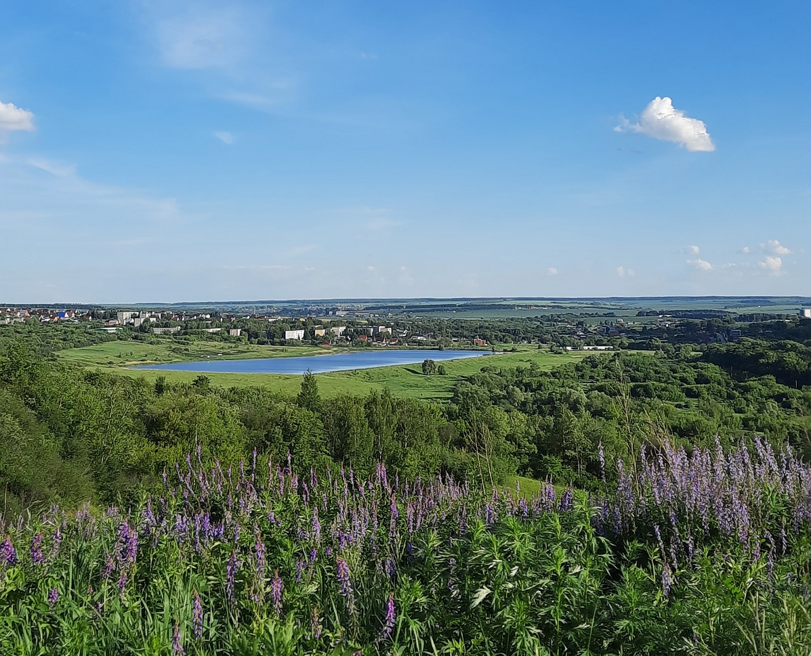

Администрация Большеелховского сельского поселения
Официальный сайт поселения: новости, документы, обращения граждан, меры поддержки, календарь событий и контактная информация администрации.

Большеелховское сельское поселение — территория в составе Лямбирского района Республики Мордовия.
Административный центр — село Большая Елховка. В состав поселения входят село Большая Елховка и деревня Малая Елховка. На сайте собрана информация для жителей и гостей поселения.
Популярные разделы
Службы, предприятия, направления деятельности и полезные материалы собраны на одной странице.
Важные сообщения администрации, объявления и общественная повестка поселения.
Культурные, общественные и праздничные мероприятия на территории поселения.
Администрация находится в селе Большая Елховка.
Адрес: Республика Мордовия, Лямбирский район, с. Большая Елховка, ул. Фабричная, д. 21.
Телефоны: +7 (83441) 3-09-90, +7 (83441) 3-09-91.
Полезные разделы для жителей теперь собраны отдельно.
ЖКХ, безопасность, медицина, образование, культура, спорт, транспорт, организации и официальные материалы — всё в одном справочнике.